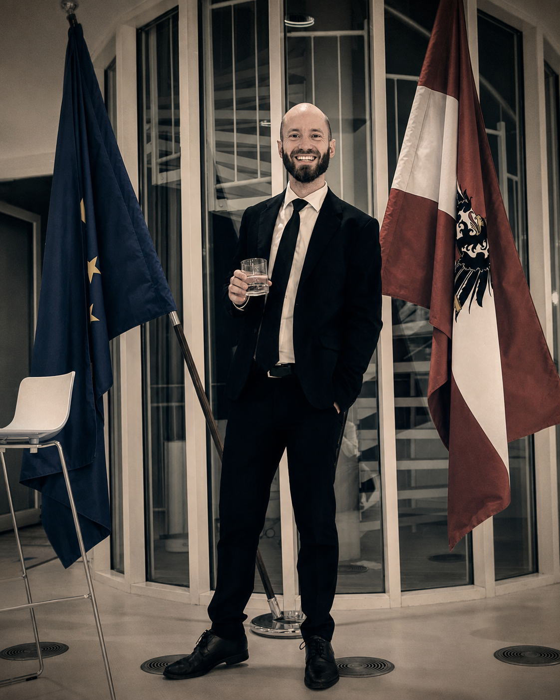

Alexander Forum
Social analysis, democratic resilience and the question of how societies withstand crises.

“I try to understand before I judge.”
My professional path has taken me through different practical, political and communicative fields. These include emergency services, local politics, marketing and three years of formal training in early childhood education.
These experiences have sharpened my sense of how people and institutions function, where they reach their limits and how their decisions affect others. Today I bring these perspectives together through research, analysis and writing.
The projects on this site do not follow one single professional or institutional logic. They begin with different questions that keep touching one another: How do people and systems function? What is being overlooked? And how can complexity be described in a way that leads to a more precise judgement?
Personal experience, research and writing are not opposites here. They offer different ways into a subject — and each requires its own kind of care.
Social analysis, democratic resilience and the question of how societies withstand crises.
Personal essays on psychology, crisis, addiction, trauma, philosophy and being human.
A research project on sports betting markets, probabilities, value and prices.
The three projects remain distinct. Dorianrammer.at is their personal point of connection — a place that shows who is behind them and from which perspective the work emerges.
← Back to Dorianrammer.at